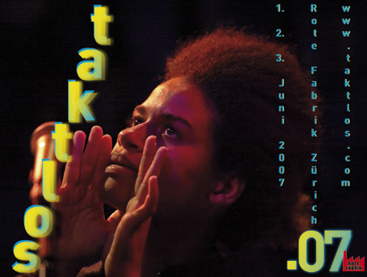

::: ::: ::: taktlos.07 ::: ::: :::
| 1. Juni 2007 20:00 | bis | 3. Juni 2007 20:00 |
/// ::::Das taktlos.07 ist das vierundzwanzigste seit 1984 und präsentiert an drei Tagen ein Programm, in dem ein Trio, ein Quartett und sechs Quintette zu hören sind. Insgesamt sind achtunddreissig KünstlerInnen beteiligt und die Mehrheit davon sind natürlich MusikerInnen. Dieses Jahr sind zwei Filmer, eine Steptänzerin, ein Sounddesigner und eine für die Visuals zuständige Künstlerin im Geschehen integriert. Nebst der Musik, die sich im Grenzbereich von Jazz, Ambient, zeitgenössischer Komposition, Rock, Elektronik, Freejazz und Improvisation bewegt, verbinden und überkreuzen sich einzelne Stränge mit Musique concrète oder setzen Bild und Tanz gleichberechtigt neben die Musik. Mit dem Steptanz und den eingespielten Filmfragmenten werden die Terrains erweitert und neue Territorien erschlossen. Gleichzeitig werden aber auch das musikalische Erbe und die Jazztradition gepflegt.:: |::: :::
::

::
:: Das Taktlos vernetzt MusikerInnen aus zehn verschiedenen Ländern, die bis auf vier alle aus Europa stammen. Marilyn Crispell und Joseph Bowie kommen aus den USA, Tom Tlalim aus Israel und Luanda Casella aus Brasilien. Die Konzentration auf europäische Gruppen steht für ein äusserst vibrierendes und experimentierfreudiges Schaffen. Es sind auf dem «alten Kontinent» vermehrt Überraschungen und Entdeckungen zu machen, die von einem gesunden Selbstbewusstsein der Szene künden. Mit Superterz und Lauschangriff sind zudem zwei junge Zürcher Gruppen im Programm, die ein grosses Potential haben. Die «Matthäus Passion» nach J. S. Bach entstand aus einer Produktion von Stefan Pucher heraus, die das Zürcher Schauspielhaus im Schiffbau vor zwei Jahren zur Aufführung brachte. :: | ::: :::
::
:: Das Taktlos lässt neue Beziehungen entstehen und festigt auch einige ältere. Dreissig der beteiligten KünstlerInnen treten erstmals im Rahmen des Taktlos auf, nur acht konnten Sie in den vergangenen dreiundzwanzig Jahren schon ein oder mehrere Male begegnen – aber nie in einer der Formationen, die dieses Jahr auf der Bühne stehen werden. Der Schlagzeuger Paul Lovens war als einziger am ersten Taktlos von 1984 beteiligt und spielte vergangenes Jahr in Aki Takases «Plays Fats Waller». Jetzt ist er wie Marilyn Crispell, Barry Guy, Paul Lytton, Martin Schütz, Louis Sclavis, Luc Houtkamp und Jacques Demierre in neuen Zusammenhängen zu erleben. :: |::: :::
::
::::Das Kapital und Magic Cinema eröffnen das diesjährige Programm. Die Verbindung von Musik und Film trägt den programmatischen Titel «Wonderland» und setzt sich auf der Bildebene mit der Stadt Zürich und ihren BewohnerInnen auseinander. Der in München lebende Schweizer Filmer Nicolas Humbert hat sich bereits Ende der achtziger Jahre mit «Step Across the Border», dem dokumentari- schen Porträt über Fred Frith, als genauer Beobachter ausgewiesen. Der aus Den Haag stammende Luc Houtkamp verbindet mit seinem POW Ensemble und der Steptänzerin Marije Nie die Tradition des «New Dutch Swing» mit afroamerikanischer Tradition, die durch den Posaunisten Joseph Bowie in der funkigen Spielart repräsentiert ist. Die auf den Kern reduzierten Superterz haben als Gast die Pianistin Marianne Schroeder eingeladen, die als Interpretin von Giacinto Scelsi bekannt ist. Sie verbinden so das analoge mit dem digitalen Zeitalter über die Generationen hinweg.:: | ::: :::
::
:::: :::: In der «Matthäus Passion» nach J. S. Bach verzahnt der Tenor Christoph Homberger Elemente der Komposition auf eindrückliche Weise mit den Improvisationen von Demierre-Schütz-Lovens, formt sie zu phantasiereichen Geschichten. Im London Jazz Composers Orchestra und dem Barry Guy New Orchestra, die 1995 respektive 2000 in der Roten Fabrik spielten, war das Trio Guy-Crispell-Lytton integriert. Die Essenz der beiden Grossformationen schwingt in dieser Urzelle mit. Eine holländisch- belgische Freundschaft segelt unter dem Namen Electric Barbarian. Ihr Amalgam von Hiphop, Jazz und Drum’n’ Bass ist etwas für verwegene TänzerInnen. Die brasilianische Spoken-Word-Artistin Luanda Casella, die als Gast dabei ist, verleiht der Gruppe einen zusätzlichen Drall.::| ::: :::
:: :::: :::: :::: Den Sonntagabend teilen sich zwei Gruppen. Der französische Klarinettist Louis Sclavis hat für seine junge Gruppe teils kammermusikalisch anmutende Kompositionen geschaffen. Gemeinsam schreiben sie an der «imaginären Folklore» weiter und heben zwischendurch ab wie Miles auf «Bitches Brew». Der das Taktlos abschliessende Lauschangriff versammelt eine reaktionsfreudige Crew aus Zürich, bei der als Gast Martin Schütz am Cello dabei ist. Erinnerungen an The Ex und Tom Cora (1954-1998) werden wach, die 1992 am Taktlos für Furore gesorgt haben. Geschichte lässt sich nicht wiederholen und von der Allerweltsmusik haben wir schon genug gehört. Den abenteuerlichen Experimenten gehört die Zukunft. :: | ::: :::
::
:: Für Radio DRS2 hat Jürg Solothurnmann in den vergangenen Jahren regelmässig in den Sommer- monaten einen Teil der Konzerte vom Taktlos Zürich präsentiert. So wird es auch dieses Jahr sein. Die Sendezeiten finden Sie unter AdHoc. :: | ::: :::
::
:: Das «Fest des flüchtigen Augenblicks» geht weiter und nächstes Jahr feiert das Taktlos in der Roten Fabrik seine fünfundzwanzigste Edition. :: | ::: :::
::
::
:: Fredi Bosshard, April 2007, Fabrikjazz Zürich :: | ::: :::
::
:: \\\ ::: :::